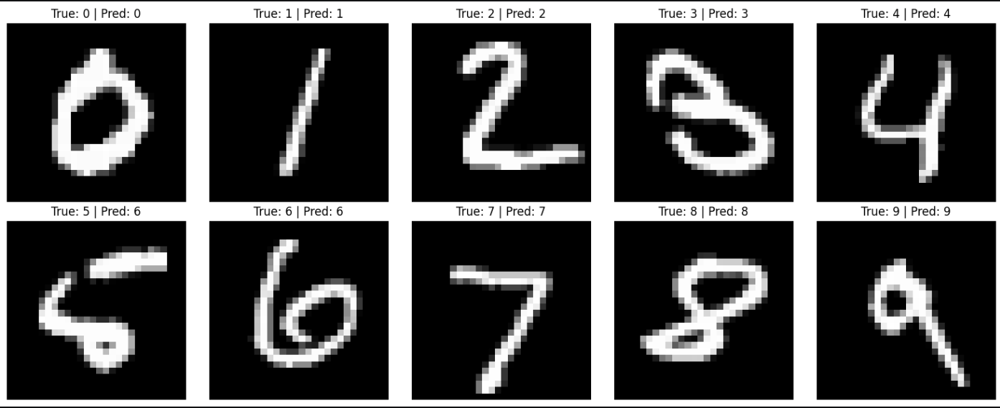

Neural Network MLP is a Python implementation of a multi-layer perceptron built entirely from scratch without using any machine learning frameworks.
The goal was to deeply understand how neural networks work under the hood by implementing every component manually.
The project covers the full pipeline—from initializing weights and biases, running feedforward passes, computing loss, and updating parameters through backpropagation.